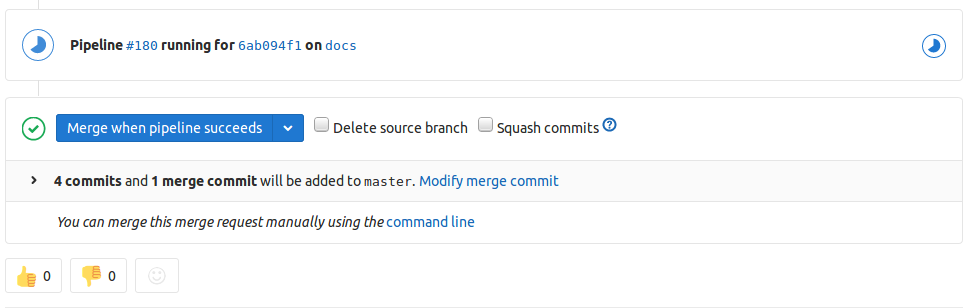
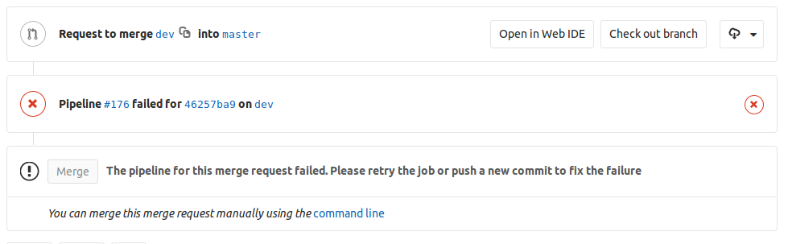

Integrate gitlab and buildbot
Situation
This is my personal experience. I joined a software team where teammates did not pay enough attention to keep our codebase healthy. In many times, I pulled the tip code and the build failed because of syntax error. Even worse, sometimes the program did not run as expected. When preparing for a demo, people took hours to figure out how to successfully compile the code and run the programs.
Many of the team members join the team right after gradation from college. No body in the school taught them how to cowork as a team using modern tools. However, with a constant failure in building/deploying our project, smart people can sense something wrong in the team, feel disapointed, and leave for more promising teams.
To remedy this, we first set up gitlab to host our repositories and discourage people to exchange code via USB disk. It didn’t work well; some people are relunctant to push their code to gitlab and insisted their old workflow. Later, I set up buildbot to monitor the codebase and its build status. It helped; some people reacted quickly once the buildbot sent them emails about build failures, but some just ignored the emails. Then I realized that a patch should be automaticaly inspected before landing to the master branch. To make the codebase health, that is, compilable and runnable, it is not enough to rely on work ethics. A systematic method must be developed to block problematic commits sneaking into the codebase.
Task
Combine the power of gitlab and buildbot to
- force code review, and
- force compilation check before pushing to the master branch.
Action
- In gitlab, set master branch to be protected, allow no one to push, and allow only maintainers to merge.
- In gitlab, set hook for merge request events.
- In buildbot, define build steps for each merge request.
- In buildbot, configure it to receive gitlab events, run the build steps, and send the build result back to gitlab.
- (Optional) In gitlab, set merge checks to “Pipelines must succeed”.
buildbot provides a good example of the configuration, see here.
Result
We adopt many open source tools to perform the checks. After a few weeks of the implementation, the buildbot dashboard looks greener than before. Most of the workflow is done automatically. It does not take additional efforts when compared to the old one. More important, people accept the new workflow, probably because the merge request are judged by objective tools, not by subjective people.
Below are the screenshots of the result.


Note
- When buildbot and gitlab do not integrate well, add debug=True in GitLabStatusPush() call in buildbot master.cfg. It will show what’s going on between the two systems.
- In the merge request pipeline, I wrote a condition to decide if we are going to do a clean build or a dirty build. This way, we can make the pipeline run faster in most cases.
- In each pipeline, log everything and reveal it to users so that people know how to respond if something goes wrong.
- At the beginning of merge request pipeline, I check if the commit is based on the latest master by using the commandIf yes, then the command returns 0. Otherwise 1.
1
git merge-base --is-ancestor remotes/origin/master HEAD
- I use the following command to list the files in a merge request
1
git diff --name-only `git merge-base origin/master HEAD`